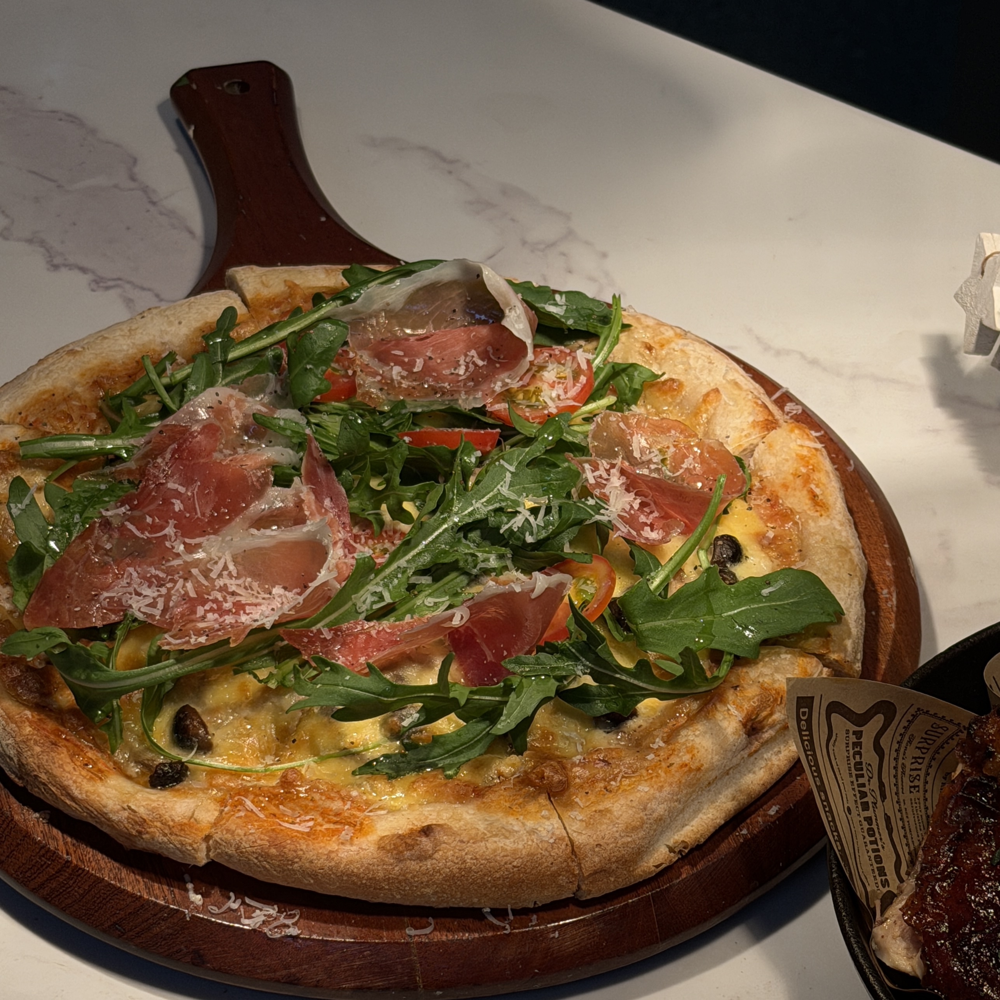
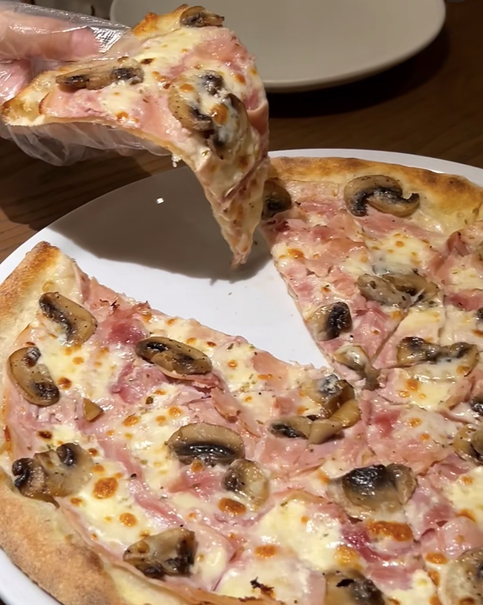

Mushroom Ham Pizza
杂菌火腿披萨 — A crispy pizza topped with mushrooms, ham, and melted cheese.
Ingredients
- Pizza base
- Mozzarella cheese
- Mushrooms (mixed)
- Ham slices
- Tomato sauce
- Olive oil
- Salt & pepper
- Italian herbs
Directions
- Preheat oven to 220°C (428°F).
- Spread tomato sauce evenly on the pizza base.
- Add mushrooms and ham slices.
- Sprinkle mozzarella cheese on top.
- Drizzle olive oil and season lightly.
- Bake for 8–10 minutes until golden and bubbly.
- Remove, slice, and serve hot.